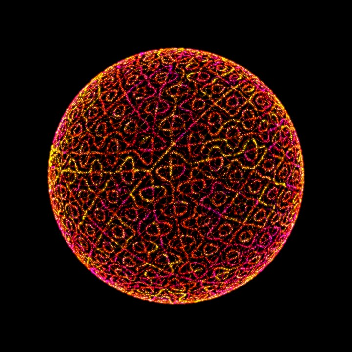

Token #1
- Hash
- 0x26ca…96f3
- Scale Family
- Pentatonic
- Scale
- Major pentatonic
- Base Pitch
- A2 +2c (108.1 Hz)
- Tuning
- 5-Limit Just
- Interval Path
- Arpeggio
- Contour
- Inversion
- States
- 5
- Second Voice
- Chord fifth (+4 degrees)
- Loop
- 120 s
tap/drag to rotate · S or Double-Tap for Sound